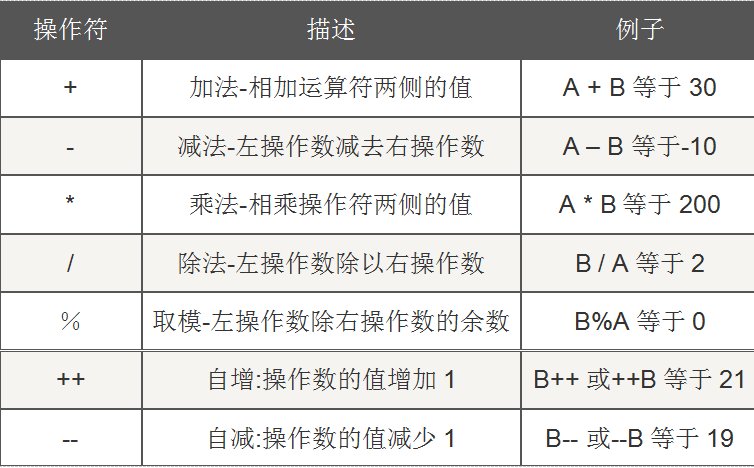
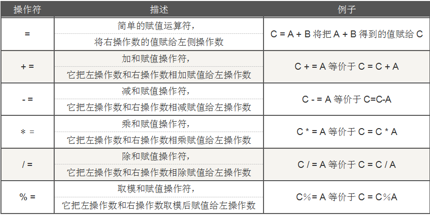
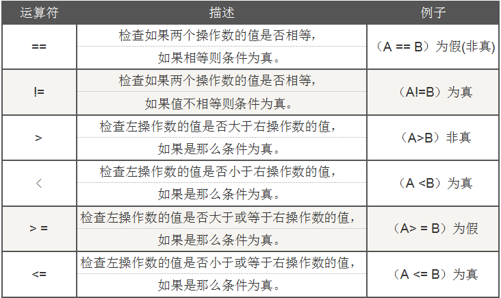
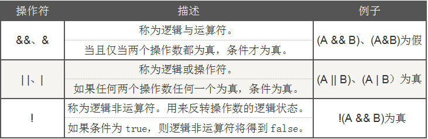

4.7.Java运算符
运算符是一些特殊的的符号，主要用于数学函数、一些类型的赋值语句和逻辑比较方面。Java提供了丰富的运算符，如算术运算符、赋值运算符、比较运算符等。现在我们开始学习运算符。当然，也只是抽取运算符中比较常用的来介绍。
4.7.1.算术运算符
常用的算术运算符有以下几个：
在表格中的实例，假设整数变量A的值为10，变量B的值为20：

算术运算符中，+、-、*、/,跟我们数学中的加减乘除的使用是一样的；取模%，就是求余；++、--是对操作数进行自加、自减操作。
整数之间做除法的时候，自保留整数部分而舍弃小数部分。
自增（++）自减（--）运算符是一种特殊的算术运算符，在算术运算符中需要两个操作数来进行运算，而自增自减运算符是一个操作数。自增或自减运算符可以放在操作数之前，也可以放在操作数之后，操作数必须是一个整数或是浮点数。
在代码中写：
int a = 35;
int b = 6;
int c = ++b;
System.out.println("b="+b+",c="+c);
运行得到的结果是：
b=7,c=7
如果改成：int c = b++;
那么运行的结果是：b=7,c=6
这是为什么呢？这是因为
如果自增运算符放在操作数的前面，会先将变量的值加1，然后再使该变量参与表达式的运算；如果自增运算符放在操作数的后面，会先使该变量参与表达式的运算，然后再将变量的值加1。所以，int c = ++b；++号放在操作数b的前面，所以，b会加1，得到b=7，最后再将b赋值给c，所以c的是就是7；int c = b++时；++号在操作数的后面，所以，运算时，会先将b的值赋值给c，此时b=6，所以c=6；然后进行++操作，所以b的值变成了7。
自减运算符也是一样，如果自减运算符放在操作数的前面，会先将变量的值减1，然后再使该变量参与表达式的运算；如果自减运算符放在操作数的后面，会先使该变量参与表达式的运算，然后再将变量的值减1。
4.7.2.赋值运算符
现在有三个数，分别是A、B、C，

4.7.3.比较运算符

使用比较运算符，它的结果只能是真或假，即true或false。它们的计算方式跟数学中的计算方式是一样的，只是符号写法些不同。所以大家要记住它的语法，使用规则这样数学中的使用规则一样。
4.7.4.逻辑运算符

4.6.4.1 逻辑与
逻辑与，使用时，当运算符左右的两个操作数的返回值都是true的时候，运算结果才会是true。
那么，&&和&有什么区别呢？我们来看一下程序：
定义两个变量：
int a = 5;
int b = 6;
输出：
System.out.println((a>b)&&(++a>b));
System.out.println(a);//a=5
我们来看一下，a>b结果是false，所以，输出的结果应该是false。运行，判断正确。此时a的值是5.也就是说，没有执行&&右边的表达式。
输出：
System.out.println((a>b)&(++a>b));
System.out.println(a);//a=6
它的运行结果也是false。此时，a的值是6，&右边的表达式执行了。
也就是说，&&左边的表达式能够判断出整个表达式的结果的时候，它就不进行&&右边表达式的计算了，这就是&&的短路功能。而&没有短路功能，左边的表达式，不管能不能判断出整个表达式的结果，它都会进行右边表达式的计算。
也就是说，a>b的结果是false，，就已经能判断整个表达式的结果就是false。所以&&都不再往下执行，所以a的值是5，但是&则是会继续执行，进行(++a>b)的计算，所以a的值变成了6。
在使用的时候要注意：
Java中不支持a<x<b的写法,要实现数学中的这种表达，应该写成x>a && a<b.的形式才对。
3.6.4.2 逻辑或
逻辑或，使用时，当运算符左右两个操作数的返回值都是false的时候，运行结果才会是false。
现在，我们来看看|和||的区别：
输出：
System.out.println((a<b)||(++a>b));//5
System.out.println((a<b)|(++a>b));//a=6
两个的结果都是true。但是双|输出的a为5，单|输出的a为6.
因此，||与|的关系跟&&与&的关系相似。||左边的表达式能够判断出整个表达式的结果的时候，它就不进行||右边表达式的计算了，这就是||的短路功能。而|没有短路功能，左边的表达式是不管能不能判断出整个表达式的结果，它都会进行右边表达式的计算。
所以a<b的结果是true，逻辑或，使用时，只要有一个操作数的值是true，那么整个表达式的结果就是true。现在有一个表达式的结果是true，所以可以直接判定整个表达式的返回值时true。所以||有短路功能，不执行||右边的表达式，直接返回，所以a的值是5；而|没有短路功能，它会继续执行|右边的表达式，所以a的值是6.
3.6.4.3 逻辑非
！，逻辑非，将逻辑结果翻转，如果表达式的结果是true，那么进行非运算的到的结果就是false，如果表达式的结果是false，那么进行非运算的到的结果就是true。
如：System.out.println(!(a<b));
结果是：false
4.7.5.三元运算符
三元运算符是Java中唯一的三目运算符，它的格式是：
(条件表达式)?表达式1:表达式2;
从它的格式我们可以看出，它的操作元有3个，第一个是表达式返回的结果是boolean类型，其余两个表达式返回的是值，且是同类型的值。当条件表达式的结果为true，返回表达式1的结果；当条件表达式的结果为false，返回表达式2的结果。
看下面的代码：
//定义两个变量
int a = 20;
int b = 40;
/*max取a、b中的最大值，
在这里，如果a的值大于b的值，那么就返回a，否则返回b，并将返回的结果赋值max*/
int max = a > b ? a : b;
//输出最大值
System.out.println("max="+max);
运行结果：max=40
大部分时候，三目运算符是作为if else语句的简写。因此上面的代码通用可以使用if else语句实现。
If(a>b){
System.out.println(a);
}else{
System.out.println(b);
}
这两种代码的效果是一样的。三目运算符和if else写法的区别在于：if后面的语句块中可以有多条语句，但是三目运算符是不支持多个语句的。而且三目运算符，它是一个运算符，是要进行计算的，所以运算完肯定会有一个结果。